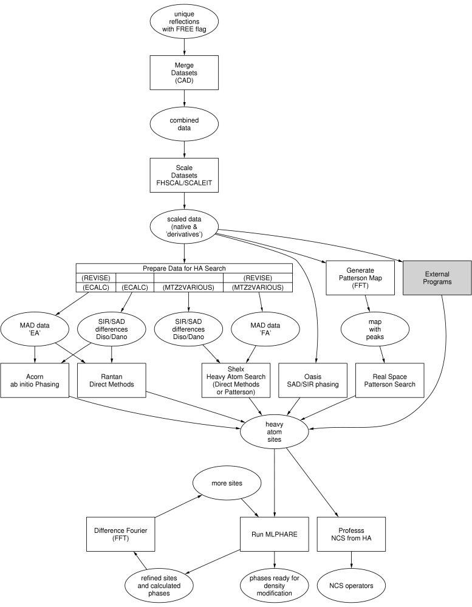

|
CCP4 Roadmaps |
| EXPERIMENTAL PHASING |
MULTIPLE ISOMORPHOUS REPLACEMENT
AND
MULTI-WAVELENGTH ANOMALOUS DISPERSION

The plain rectangular boxes represent
tasks as in the
CCP4 Graphical User Interface, the steps to take for experimental phasing.
Stippled rectangular boxes represent external programs. 'Difference Fourier' is not part of the
Experimental Phasing module
in the Interface; for this,
Run FFT - Create Map
is used, in the
Map & Mask Utilities module.
The ellipsoids represent the input and output to and from the various tasks.
Auxiliary CCP4 programs used in these tasks
- CROSSEC
- Lest anomalous scattering factors f' and f" at various X-ray wavelengths
- FINDNCS
- Detect NCS operations automatically from heavy atom sites
- MTZMADMOD
- Generate F+/F- or F/D from other for anomalous data
- OASIS
- Breaking phase ambiguity in OAS or SIR
- PEAKMAX
- Search for peaks in the electron density map
- VECREF
- Vector-space refinement of heavy atom sites in isomorphous derivatives
- VECSUM
- Program to deconvolute a Patterson function and solve the structure (unsupported)
- VECTORS
- Generates Patterson vectors from atomic coordinates
Other non-CCP4 programs
- AD@LLNL
- Anomalous scattering coefficients - forms interface to calculate expected anomalous dispersion ratios
- AS@UW
- Anomalous scattering coefficients - forms interface to plot theoretical values of f' and f''
- CHOOCH
- Calculating Anomalous Scattering Factors from X-ray fluorescence data
- SharpHome@MRC
- Statistical Heavy-Atom Refinement and Phasing
- SnB@SUNY
- A Direct-Methods Procedure for Determining Crystal Structures
- SOLVE@LANL
- Automated crystallographic structure solution for MIR and MAD
Further reading
CCP4i Documentation on Experimental Phasing

Tutorial on Isomorphous
Replacement and Anomalous Scattering (I. Tickle)
ScaleChoose
MAD Phasing
CCP4 Program Documentation